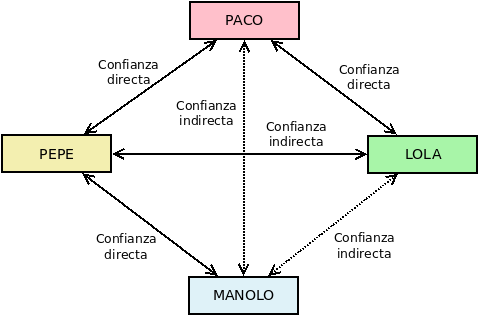

9.1.3.1. Certificado digital¶
Nota
Tratamos los certificados digitales de clave pública, por lo que a partir de ahora hablaremos, simplemente, de certificados digitales.
Antes de pasar a las aplicaciones prácticas propiamente dichas, nos detendremos en un concepto que usarán comúnmente tales aplicaciones. Téngase presente que a pesar de que la suplantación de identidad parece resuelta gracias al cifrado asimétrico, puesto que poder descifrar una firma supone que el firmante sea el propietario de tal clave pública, hay aún una debilidad: ¿cómo puede el verificador estar seguro de que tal clave pública pertenece a quien parece pertenecer? A fin de cuentas, la suplantación ha podido producirse en el momento de la entrega de la clave pública y, si ha sido así, todo el proceso de verificación de la identidad estará viciado. Para subsanar este último escollo existen los certificados digitales.
9.1.3.1.1. Concepto¶
Un certificado digital es un documento compuesto por una clave pública (asociada a una clave privada) y unos datos que identifican al propietario de tales claves, todo él firmado por un tercero que avala la veracidad de tal identificación.

Es importante tener presente que lo que hemos denominados datos identificativos en el esquema no son exclusivamente datos referentes a la identidad del propietario del certificado, sino que son también metadatos relativos al propio certificado como cuáles son las fechas entre las que el certificado es válido o cuáles son las finalidades lícitas para las que se puede usar. Por ejemplo, un certificado puede o no estar habilitado para firmar otros certificados (es decir para actuar como tercero de confianza).
De esta forma, el propietario no cede a los demás una simple clave pública, sino un documento acreditativo (el certificado) para asegurar la legitimidad de la clave, Es obvio que el problema de suplantación no se soluciona simplemente por adjuntar los datos de identificación, sino porque un tercero avala la relación entre la clave y la identidad firmando el conjunto. Por tanto, hemos trasladado el problema de confianza desde las claves del propietario a las claves del tercero firmante. Pero ¿cómo confiamos en el tercero?
9.1.3.1.2. Estrategias de confianza¶
Hay dos estrategias para conferir confianza a un tercero:
Una red de confianza totalmente descentralizada en que las relacionaes de confianza entre los propietarios de las claves se establecen de igual a igual. Así, si dos propietarios –«Pepe» y «Paco»– están seguros de la veracidad del certificado del otro (por ejemplo, por un encuentro físico), podrán firmarse los certificados y establecer una relación de confianza directa. Un tercer propietario llamado «Manolo», que no haya entrado en contaco con «Paco», pero si con «Pepe», tendrá una relación de confianza directa con «Pepe» y, en consecuencia, también podrá confiar en la veracidad del certificado de «Paco», puesto que «Pepe» lo avala y él confía en «Pepe» (relación de confianza indirecta). Los certificados PGP, de los que discutiremos al tratar el correo electrónico, fundamentan su confiabialidad en una red de confianza.
Una infraestructura PKI, que es una estructura jerárquica de confianza. En ella, el tercero que acredita la identidad del propietario del certificado es una autoridad de certificación (CA). Esta CA a su vez gozará de confianza, porque otra CA de nivel superior la haya acreditado firmándole el certificado. Los certificados X.509, definidos en el RFC 5280, basan su confianza en PKI.
El resto de la exposición se centra en esta segunda estrategia jerárquica. Las primera estrategia sólo es ampliamente utilizada en el correo electrónico, por lo que la trataremos al hablar sobre el cifrado y la firma de mensajes de correo electrónico.
9.1.3.1.3. Infraestructura PKI¶
Nota
Centraremos nuestra atención exclusivamente en los certificados X.509, aunque una infraestructura de este naturaleza puede hacerse con otro tipo de certificados. Por ejemplo, los certificados SSH fundamentan su confiabilidad también en una infraestructura PKI. Se tratará de ellos al analizar la aplicación de la criptografía en la autenticación. Para la conversión entre claves generadas con OpenSSH y OpenSSL puede consultar el epígrafe dedicado a ello.
Retomando lo expuesto hasta ahora, un certificado digital se compone de:
Una clave pública.
La identidad del propietario de dichas claves.
La firma digital de una autoridad de certificación sobre la clave pública y los datos identificativos, que avala la relación entre la clave y la identidad de su propietario.
Ahora bien, ¿quién es esta autoridad de certificación y por qué es digna de confianza? Una autoridad de certificación (a partir de ahora, CA) es aquella entidad de confianza encargada de emitir (y revocar) certificados digitales. Para llevar a cabo esta tarea la propia CA dispone de un certificado, de manera que con su clave privada asociada firma los certificados que emite. La estructura es jerárquica y el certificado de una CA intermedia estará avalado por la firma de otra CA de rango superior. Sin embargo, la relación jerárquica no puede ser infinita por lo que al final de la cadena de confianza siempre existirán unas CA raíz cuyos certificados son autofirmados, esto es, certificados que nadie ha avalado digitalmente. La confianza en los certificados raíz se debe a que los propios sistemas operativos y navegadores web los incorporan de serie, porque de algún modo los fabricantes de este tipo de software habrán efectuado la verificación. Así, Debian incluye el paquete ca-certificates con certificados raíz que reconoce como confiables.
Nota
Aunque un certificado raíz puede en teoría firmar certificados de usuario, en la práctica una infraestructura PKI tiene siempre al menos un certificado intermedio.
Un ejemplo de esta jerarquía es el certificado gratuito para servidores web emitido por Let’s Encrypt (descargable en esta dirección), cuyo certificado a su vez está firmado por Digital Signature Trust (la cual sí es una CA raíz):
$ wget -qO letsencrypt.cer "http://r3.i.lencr.org/"
$ openssl x509 -inform der -in letsencrypt.cer -subject -issuer -noout
subject=C = US, O = Let's Encrypt, CN = R3
issuer=O = Digital Signature Trust Co., CN = DST Root CA X3
Sea como sea, las CA generan distintos tipos de certificados:
Para otra CA subordinada.
Para persona física o jurídica.
Para firma de código.
Para servidor en red.
Además, suelen clasificar los certificados que emite dependiendo del grado de verificación que haya exigido, del grado de seguridad de las claves que use o de a quienes vayan dirigidos (para persona física, para administración pública, etc). Tales clasificaciones no siguen unas mismas reglas, pero suelen coincidir en la nomenclatura: «Clase 1», «Clase 2», «Clase 3», etc. donde mayor es el cardinal cuanto mayor el grado de seguridad. Por ejemplo, una clasificación podría ser la siguiente:
- Clase 1
Certificado que acredita parcialmente la identidad mediante algún mecanismo telemático. Por ejemplo, acredita la dirección de correo electrónico de una persona o el nombre de dominio a un servidor. Sin embargo, no queda constancia fehaciente de quién es la persona física propietaria del correo o quién el propietario del dominio.
- Clase 2
Exige una acreditación fehaciente de la identidad, generalmente mediante asistencia física. Con un certificado de esta clase sí se puede asociar un certificado personal a una persona física o un nombre de dominio a su empresa propietaria.
Los certificados personales expedidos por la FNMT podrían ser un ejemplo de esta clase.
- Clase 3
Para su expedición se exige el más alto grado de acreditación.y se usan los algoritmos y claves más potentes.
Nota
Legalmente, en España el Ministerio competente reconoce una seríe de CA cualificadas para emitir certificados con los cuales la firma digital tiene exactamente la misma validez legal que la firma manuscrita (más adelante trataremos brevemente el estatus legal), Una de estas CA es CERES, departamento de la Fábrica Nacional de Moneda y Timbre, que emite en España una buena parte de los certificados para persona física gracias a una extensa red de oficinas de registro (RA) que incluye oficinas de la Seguridad Social, de la Agencia Tributaria o ayuntamientos.
9.1.3.1.3.1. Certificados personales¶
El proceso típico de emisión de un certificado personal es el siguiente:
El interesado realiza una solicitud a la CA, por lo general a través de un servicio web, en que se recogen los datos identificativos y se genera una pareja de claves. Ahora bien, como la identidad del interesado no ha podido verificarse, la CA genera una petición CSR.
El interesado se acerca físicamente a la oficina de una RA (autoridad de registro) a fin de confirmar ante ésta que es quien dice ser.
La RA notifica a la CA tal verificación, con lo que esta pone a disposición del interesado (p.e. a través del servicio web que utilizó primeramente) el certificado solicitado.
El interesado obtiene el certificado y lo instala en su sistema (navegador, cliente de correo, etc).

Por último, es necesario señalar que, para asegurar la validez de un certificado, no basta sólo con comprobar si el certificado no ha caducado y la cadena de confianza a través de las firmas que contienen los certificados de la cadena. Un certificado puede haberse revocado antes de caducar y, en consecuencia, dejar de haber sido válido antes de tiempo. Por eso, las CA mantienen unas listas de revocación (CRL) en que incluyen todos aquellos certificados revocados con la fecha efectiva de revocación y la causa por la que se produjo; y es preciso a efectos de corroborar la validez de un certificado consultar tal lista. Para facilitarlo, las CA suelen ofrecer un servicio de consulta a través del estándar OCSP descrito en el RFC 6960.
Ver también
Más adelante realizaremos una verificación completa de la validez de un certficado.
9.1.3.1.3.2. Certificados de servidor¶
Estos certificados avalan la identidad de una máquina, esto es, que una máquina (o un conjunto de máquinas, si estamos ante un servicio distribuido) responde a un determinado nombre DNS. Así, por ejemplo, cuando conectamos a la página oficial de la Presidencia del Gobierno, su certificado de servidor avala que la máquina con la que conectamos es www.lamoncloa.gob.es y no una impostora que ha logrado que conectemos a ella envenenando nuestro DNS.
En los certificados de servidor, lo que se acredita no es una identidad física, sino uno o varios nombres, por lo que si consultamos uno (tal como se explica en el próximo epígrafe), nos toparemos con que:
$ openssl x509 -in /etc/ssl/certs/letsencrypt-fullchain.crt -subject -ext subjectAltName -noout
subject=CN = lets2.iescdl.es
X509v3 Subject Alternative Name:
DNS:azure.iescdl.es, DNS:lets.iescdl.es, DNS:lets2.iescdl.es
La obtención de estos certificados necesita que la máquina acredite su identidad, esto es, que acredite que el nombre DNS resuelve a su IP. Hay distintos niveles de acreditación ya que quizás no sólo interesa acreditar la propiedad del nombre DNS, sino, por ejemplo, también la propiedad del nombre comercial de la empresa para la que se quiere crear el sitio web (véanse las clases de certificado). Para el nivel más básico de acreditación, esto es, aquel en que sólo se pretende acreditar la propiedad sobre el nombre DNS, es posible la acreditación puramente telemática. Para ella, existe definido el protocolo ACME, descrito en este epígrafe sobre nginx.
Nota
Tenga presente que, aunque descritos dentro de la configuración de un servidor web, estos certificados X.509 son válidos para cualquier protocolo seguro basado en SSL/TLS.
Para descargar el certificado asociado a un sitio web podemos usar el subcomando s_client de OpenSSL:
Para obtener el certificado del servidor:
$ openssl s_client -servername www.iescastillodeluna.es -connect www.iescastillodeluna.es:443 < /dev/null > cert.pem depth=2 C = US, O = Internet Security Research Group, CN = ISRG Root X1 verify return:1 depth=1 C = US, O = Let's Encrypt, CN = R3 verify return:1 depth=0 CN = iescastillodeluna.es verify return:1 DONE
Además, obtendremos la verificación de toda la cadena de confianza. La opción -servername permite pasar el valor de la extensión SNI.
Para comprobar la cadena de confianza sin obtener el certificado podemos añadir un par de opciones más:
$ openssl s_client -quiet -no_ign_eof -servername www.iescastillodeluna.es -connect www.iescastillodeluna.es:443 < /dev/null depth=2 C = US, O = Internet Security Research Group, CN = ISRG Root X1 verify return:1 depth=1 C = US, O = Let's Encrypt, CN = R3 verify return:1 depth=0 CN = iescastillodeluna.es verify return:1 DONE
Nota
Esta acción permite verificar el certificado y toda su cadena de confianza de forma equivalente a la que se describe algo más adelante para archivos de certificados. Es bastante cómoda, pero sólo nos sirve si se obtiene el certificado de un servidor.
Para obtener la cadena completa de certificados basta con añadir la opción -showcerts a la primera orden:
$ openssl s_client -showcerts -servername www.iescastillodeluna.es -connect www.iescastillodeluna.es:443 < /dev/null > fullchain.pem depth=2 C = US, O = Internet Security Research Group, CN = ISRG Root X1 verify return:1 depth=1 C = US, O = Let's Encrypt, CN = R3 verify return:1 depth=0 CN = iescastillodeluna.es verify return:1 DONE
Esto, no obstante, generará un PEM con todos los certificados concatenados. Si queremos obtenerlos por separado, podemos pasar la salida por csplit:
$ openssl s_client -showcerts -servername www.iescastillodeluna.es -connect www.iescastillodeluna.es:443 < /dev/null | \ csplit -fcert -b%02d.pem -sz - '/^-----B/' '{*}'
que generará los archivos
cert01.pem,cert02.pem, etc. El archivocert00.pemno contendrá certificado alguno, sino las líneas anteriores al comienzo del primer certificado.
9.1.3.1.3.3. Formatos¶
Los certificados digitales se presentan en distintos formatos de archivo que conviene conocer, porque en ocasiones para hacer una determinada operación o utilizarlo con cierta aplicación lo necesitaremos en uno concreto. Además, de la descripción de estos formatos incluimos, a modo de vademécum, las órdenes más comunes con openssl para transformar del formato PEM (el estándar común en el software libre) al resto de formatos y viceversa1:
- PEM
Es el estándar desarrollado por los RFC 1421, RFC 1422, RFC 1423 y RFC 1424 y muy usado por aplicaciones de software libre (p.e. los certificados de servidor de nginx o apache se almacenan usando este estándar). Cuando se aseguran mediante cifrado simétrico, sólo se cifra la clave privada. Los archivos PEM son, en realidad, contenedores de certificados, de manera que a menudo contienen sólo la clave privada, o sólo un certificado, o el certificado y la clave privada, o el certificado, la clave privada y toda la cadena de certificados de las CAs intermedias necesarias para la verificación.
Este estándar genera archivos (normalmente imprimibles mediante codificación Base64) y suele presentarse bajo estas extensiones:
.pemtanto cuando contienen sólo el certificado (y, opcionalmente, también los de la autoridad de certificación) como cuando contienen, además, la clave privada. Los certificados están codificados en Base64.dercuando contienen sólo el certificado o la clave privada, pero se encuentran codificados en DER..keycuando el fichero contiene sólo la clave privada..cery.crtcuando contiene sólo el certificado.
Los distintos certificados dentro del archivo son fácilmente distinguibles porque su codificación Base64 se prologa con la marca ----BEGIN CERTIFICATE---- y se cierra con -----END CERTIFICATE----- y con una leyenda similar también se prologa y cierra la clave privada. No obstante lo anterior, en ocasiones el certificado no se presenta codificado en Base64 sino codificado en forma binaria (formato DER). De hecho, la codificación en Base64 se obtiene a partir de la binaria añadiendo las leyendas de prólogo y de cierre ya descritas2.
Cuando el certificado está en esta forma DER, el archivo sólo puede contener o el certificado o la clave privada, ya que no hay marcas BEGIN/END que puedan separar los distintos certificados. openssl presupone que la codificación es Base64, así que cuando se trabaja con este formato no hay que expresar que tiene esta codificación (»PEM» como la llama el openssl). En cambio, cuando utilicemos la codificación DER necesitaremos indicarlo expresamente con -inform der, si es un archivo de entrada, o -outform der, si es un archivo de salida.
Algunas operaciones habituales con este tipo de certificado son:
Ver los datos públicos del certificado:
$ openssl x509 -in CERTIFICADO.pem -text -nooutAdvertencia
Si el archivo contiene varios certificados públicos, sólo mostrará el primero presente en el archivo. Siga leyendo para saber cómo ver el resto.
Generar el hash del campo «Subject»:
$ openssl x509 -in CERTIFICADO.pem -hash -nooutNota
Este hash es el que se usa para generar el nombre del enlace simbólico en
/etc/ssl/certs. Véase más adelante catálogo de certificados.También es posible generar el hash del campo «Issuer»3:
$ openssl x509 -in CERTIFICADO.pem -issuer_hash -nooutComprobar que una clave privada (en
CERTIFICADO.key) corresponde a un certificado (enCERTIFICADO.pem):$ openssl x509 -in CERTIFICADO.pem -modulus -noout | md5sum 513830b5a6d44284ac84deb1566f34b6 - $ openssl rsa -in CERTIFICADO.key -modulus -noout | md5sum 513830b5a6d44284ac84deb1566f34b6 -
Si coinciden (como es el caso), entonces la clave privada es la correspondiente.
Generar un archivo
.p12a partir de los archivos.pemy,key:$ openssl pkcs12 -export -in CERTIFICADO.pem -inkey CERTIFICADO.key -out CERTIFICADO.p12supuesto que tengamos certificado y clave privada en distinto archivo. Si están contenidas en el mismo PEM basta la opción -in. El archivo con el certificado puede contener también el certificado de la(s) autoridad(es) de certificación. Si el certificado de la autoridad está en archivo distinto, pero se quiere incluir dentro del resultado puede referirse este tercer archivo mediante la opción -CAfile.
Nota
La orden requerirá interactivamente, en principio. dos claves: una para descifrar la clave privada contenida en el PEM y otra para cifrar
CERTIFICADO.p124. Para pasar por la línea de órdenes las claves (útil en scripts) utilice las opciones -passin y -passout y consulte la sección «Pass Phrase Options» de openssl(1).Transformar el certificado PEM al formato PKCS #7:
$ openssl crl2pkcs7 -nocrl -certfile CERTIFICADO.pem -out CERTIFICADO.p7bVer todos los certificados contenidos en el archivo PEM. Esto se logra traduciendo el certificado al formato PKCS #7 primero, porque para este formato openssl sí muestra la información sobre todos:
$ openssl crl2pkcs7 -nocrl -certfile CHAIN.pem | openssl pkcs7 -print_certs -text -noout
Transformar el certificado PEM en Base64 a codificación DER:
$ openssl x509 -in CERTIFICADO.pem -outform der -out CERTIFICADO.crtTrasformar la clave privada PEM en Base64 a codificación DER:
$ openssl rsa -in CERTIFICADO.key -outform der -out CERTIFICADO.key.derAdvertencia
El formato resultante no estará cifrado y, por tanto, la clave privada estará totalmente desprotegida.
Ver los datos del certificado (si usa codificación DER):
$ openssl x509 -inform der -in CERTIFICADO.crt -text -nooutTrasformar un certificado público DER a Base64:
$ openssl x509 -inform der -in CERTIFICADO.crt -outform pem -out CERTIFICADO.pemTrasformar la clave privada en codificación DER a Base64 protegiéndola con un cifrado AES256):
$ openssl rsa -inform der -in CERTIFICADO.key.der -outform pem -aes256 -out CERTIFICADO.keyNota
Consulte openssl-rsa(1) para ver qué otros parámetros cifran la clave con algoritmos distintos.
- PKCS #12 (
.p12o, frecuentemente en Windows,.pfx) Formato originario de Microsoft que se acabó estandarizando mediante el RFC 7292 y contiene tanto el certificado como la clave privada asociada. También puede contener certificados de CA intermedias. En este formato toda la información contenida esta cifrada con una clave simétrica (a diferencia del PEM que sólo cifra la clave privada) y es el que suelen usar los navegadores para exportar e importar los certificados personales de los usuarios.
Operaciones habituales:
Convertir el archivo
.p12al formato PEM5 en un sólo archivo:$ openssl pkcs12 -in CERTIFICADO.p12 -out CERTIFICADO.pemÍdem, pero separando en dos archivos la clave pública y la privada:
$ openssl pkcs12 -in CERTIFICADO.p12 -nocerts -out CERTIFICADO.key $ openssl pkcs12 -in CERTIFICADO.p12 -nokeys -out CERTIFICADO.pem
Nota
Al generar el PEM con el certificado se puede querer no incluir los certificados de las CA intermedias añadiendo -clcerts; o justo lo contrario y sólo incluir los certificados intermedios (añadiendo -cacerts).
Ver los datos del certificado (no hay forma directa, así que hay que traducir a PEM y obtener la información de la traducción):
$ openssl pkcs12 -in CERTIFICADO.p12 -clcerts -nokeys | openssl x509 -text -noout
- PKCS #7
Formato estandarizado a través del RFC 2315 que sólo contiene el certificado (no la clave privada). Suele usarse en sistemas Windows y aplicaciones escritas en Java. Utiliza las extensiones:
.p7bcuando está codificado en Base64. En este caso el archivo puede contener varios certificados públicos prologado y cerrado cada uno de ellos con una leyenda semejante a la que vimos para el caso del formato PEM..p7ccuando contiene un único certificado público en codificación DER. En este caso, debemos usar la opción -inform der para informar a openssl.
Operaciones habituales:
Consultar los datos de los certificados incluidos:
$ openssl pkcs7 -in CERTIFICADO.p7b -print_certs -text -nooutNota
A diferencia de cuando se trata con el formato PEM, la opción -print_certs para este tipo de formato muestra la información de todos los certificados incluidos en el archivo.
# Consultar el dato del certificado codificado en DER:
$ openssl pkcs7 -inform der -in CERTIFICADO.p7c -print_certs -text -nooutTransformar el certificado PKCS #7 al formato PEM:
$ openssl pkcs7 -in certificate.p7b -print_certs -out certificate.pem
Ver también
Como referencia para este apartado se ha usado la extensa respuesta a una pregunta formulada en serverfault
Nota
Lo habitual es que los navegadores:
Usen el formato PKCS#12 para exportar e importar certificados personales (que incluyen la clave privada).
Usen el formato PKCS#7 para exportar e importar certificados de terceros (que, en consecuencia, no incluyen la clave privada).
9.1.3.1.3.4. Anatomía del certificado¶
Consultar la información contenida en el certificado puede proporcionar datos muy jugosos sobre el propio certificado y eso es lo que haremos con openssl, ya que, aunque el formato PEM sea imprimible sólo es información binaria codificada en Base64, por lo que un cat es de poca ayuda. La orden para consultar los datos del certificado ya se encuentra escrita en el epígrafe anterior:
$ openssl x509 -in CERTFICADO.pem -text -noout
Si aplicamos esta orden sobre, por ejemplo, un certificado de servidor emitido por Let’s Encrypt obtendremos lo siguiente:
Certificate:
Data:
Version: 3 (0x2)
Serial Number:
03:0f:0a:5a:7a:49:c4:c1:e3:77:a3:ae:0f:7b:94:db:6d:c5
Signature Algorithm: sha256WithRSAEncryption
Issuer: C = US, O = Let's Encrypt, CN = R3
Validity
Not Before: Jan 18 10:03:44 2021 GMT
Not After : Apr 18 10:03:44 2021 GMT
Subject: CN = lets2.iescdl.es
Subject Public Key Info:
Public Key Algorithm: rsaEncryption
RSA Public-Key: (2048 bit)
Modulus:
00:e0:ba:dd:c2:58:8e:93:81:8c:72:62:8a:93:44:
7f:46:42:bd:88:33:b8:56:be:7a:6b:3c:2f:dd:9f:
f6:50:8f:9e:ff:d4:08:67:4b:20:f5:45:57:33:6e:
26:21:bb:25:cc:6a:69:8b:7b:92:ce:a6:ae:8b:2f:
46:31:8c:ab:03:b5:9b:c1:31:5b:81:4d:d0:e9:69:
cd:92:a8:28:15:de:db:39:4c:5a:12:19:d0:95:f7:
13:bb:8c:a8:af:9c:7f:b4:b1:ff:c2:8a:e8:72:61:
40:5e:12:32:f6:3a:c4:c9:5c:d1:fd:7a:8a:ba:d5:
48:58:a8:4f:b9:e7:e7:ad:7b:cb:47:5a:18:5a:fd:
9b:5b:fc:c4:0f:4d:c8:1c:d4:5c:4f:26:4d:6b:cb:
9d:39:f0:c2:67:2a:9a:1e:33:3c:e1:b9:e5:82:88:
8c:02:63:f9:02:be:09:ed:07:5e:86:de:5c:20:16:
38:64:d9:82:99:31:ca:59:28:db:10:55:bb:87:a8:
65:ec:78:87:87:cf:a0:77:a5:fa:4a:a6:56:18:00:
18:3d:4f:d1:8e:49:30:64:5f:46:34:ae:51:73:1c:
51:5e:18:ca:1a:4c:0c:3b:d2:0a:95:9f:20:1d:83:
69:95:1d:b2:b8:7b:a3:56:c5:11:f8:87:11:97:d3:
12:c3
Exponent: 65537 (0x10001)
X509v3 extensions:
X509v3 Key Usage: critical
Digital Signature, Key Encipherment
X509v3 Extended Key Usage:
TLS Web Server Authentication, TLS Web Client Authentication
X509v3 Basic Constraints: critical
CA:FALSE
X509v3 Subject Key Identifier:
E4:0B:D3:2C:DA:89:8A:80:4A:7A:76:AD:D1:9B:1C:32:5A:D2:82:C8
X509v3 Authority Key Identifier:
keyid:14:2E:B3:17:B7:58:56:CB:AE:50:09:40:E6:1F:AF:9D:8B:14:C2:C6
Authority Information Access:
OCSP - URI:http://r3.o.lencr.org
CA Issuers - URI:http://r3.i.lencr.org/
X509v3 Subject Alternative Name:
DNS:azure.iescdl.es, DNS:lets.iescdl.es, DNS:lets2.iescdl.es
X509v3 Certificate Policies:
Policy: 2.23.140.1.2.1
Policy: 1.3.6.1.4.1.44947.1.1.1
CPS: http://cps.letsencrypt.org
CT Precertificate SCTs:
Signed Certificate Timestamp:
Version : v1 (0x0)
Log ID : 94:20:BC:1E:8E:D5:8D:6C:88:73:1F:82:8B:22:2C:0D:
D1:DA:4D:5E:6C:4F:94:3D:61:DB:4E:2F:58:4D:A2:C2
Timestamp : Jan 18 11:03:44.729 2021 GMT
Extensions: none
Signature : ecdsa-with-SHA256
30:45:02:20:1E:02:B9:E3:8E:72:85:FF:85:E6:33:63:
1E:52:BA:7C:91:01:BE:F1:C8:BC:9B:45:99:0F:4C:3A:
BB:7F:16:FB:02:21:00:EC:18:54:D9:86:65:63:B7:53:
C9:8B:62:C3:AA:9E:D8:95:1E:64:CB:EA:D7:B9:E0:71:
C0:72:CF:78:16:ED:F6
Signed Certificate Timestamp:
Version : v1 (0x0)
Log ID : F6:5C:94:2F:D1:77:30:22:14:54:18:08:30:94:56:8E:
E3:4D:13:19:33:BF:DF:0C:2F:20:0B:CC:4E:F1:64:E3
Timestamp : Jan 18 11:03:44.723 2021 GMT
Extensions: none
Signature : ecdsa-with-SHA256
30:46:02:21:00:EA:A9:7C:3A:2E:5D:76:CE:E9:F8:C9:
4B:0D:7C:2C:48:DB:C9:3B:2A:3D:DA:06:3C:17:C4:33:
BA:E7:0D:FA:1C:02:21:00:BC:6B:0D:C1:4F:A3:F6:64:
E5:FC:9A:C9:24:61:83:0B:D2:9B:4D:35:2C:51:BA:E9:
93:43:6E:57:5D:31:F8:84
Signature Algorithm: sha256WithRSAEncryption
64:d5:bb:73:b6:45:9e:36:1e:92:53:bc:2a:82:1e:35:51:f3:
ae:96:6c:62:25:55:cf:3a:21:67:2b:09:3f:da:f3:81:34:7a:
b7:f7:07:72:db:6f:0b:d1:4f:d6:1e:6f:1a:8c:8c:a3:1d:09:
29:4b:ac:b2:c9:65:4a:a6:9c:ab:49:60:54:e9:22:22:f1:39:
33:09:1b:eb:95:bd:70:ff:fc:5f:6e:42:a2:5e:b5:63:35:4a:
b1:fa:4f:4e:ed:34:a2:2d:35:78:3a:67:0d:f7:82:bb:03:bb:
f1:d6:05:38:40:d5:2f:3f:34:51:9f:39:9b:a1:e1:10:a5:a8:
07:21:71:fa:1f:1a:de:e7:8d:22:44:59:e9:8f:0a:d5:6a:f7:
9d:35:80:54:a2:38:10:9d:b3:cb:3d:6e:e1:41:61:1c:60:9c:
07:a0:bb:9d:f5:c0:04:6a:4f:4c:c7:50:70:4e:7f:1d:12:08:
9e:8c:7b:ac:a8:cb:e8:7a:21:36:dd:da:e3:00:0b:a5:91:ff:
5f:2d:23:47:b9:22:34:96:0d:80:ca:0d:16:8f:72:5f:88:68:
c2:8c:fe:90:e4:82:b6:7b:30:10:87:46:64:28:17:cc:9b:db:
96:e2:e5:cf:ca:22:93:ef:3e:ba:bf:15:61:fc:bc:88:03:dd:
cd:03:c5:e1
Observando la salida se distinguen dos partes:
Los datos en sí (Data).
La firma de tales datos (Signature Algorithm) para lo cual han usado como función hash el algoritmo sha256.
Dentro de los datos podemos distinguir:
Datos propiamente identificativos como su número de serie o la identidad del propietario del certificado (
Subject).Datos referentes al propio certificado como su validez o quién es el firmante (
Issuer)5.La clave pública del certificado (
Subject Public Key Info).
Uno de los campos (X509v3 extensions) contiene campos adicionales con
información de cualquiera de los tres tipos anteriores. Algunos de estos campos
ofrecen información interesante como:
La URL en la que comprobar si el certificado está revocado (
Authority Information Access).Un identificador para el propio certificado (
X509v3 Subject Key Identifier).El identificador para el certificado con que la CA firmó (
X509v3 Authority Key Identifier).
La opción -text de openssl devuelve toda la información, pero
podemos afinar (véase openssl-x509(1)):
$ openssl x509 -in CERTIFICADO.pem -subject -noout
subject=CN = lets2.iescdl.es
$ openssl x509 -in CERTIFICADO.pem -dates -noout
notBefore=Jan 18 10:03:44 2021 GMT
notAfter=Apr 18 10:03:44 2021 GM
$ openssl x509 -in CERTIFICADO.pem -issuer -noout
issuer=C = US, O = Let's Encrypt, CN = R3
$ openssl x509 -in CERTIFICADO.pem -pubkey -noout
-----BEGIN PUBLIC KEY-----
MIIBIjANBgkqhkiG9w0BAQEFAAOCAQ8AMIIBCgKCAQEA4LrdwliOk4GMcmKKk0R/
RkK9iDO4Vr56azwv3Z/2UI+e/9QIZ0sg9UVXM24mIbslzGppi3uSzqauiy9GMYyr
A7WbwTFbgU3Q6WnNkqgoFd7bOUxaEhnQlfcTu4yor5x/tLH/worocmFAXhIy9jrE
yVzR/XqKutVIWKhPuefnrXvLR1oYWv2bW/zED03IHNRcTyZNa8udOfDCZyqaHjM8
4bnlgoiMAmP5Ar4J7Qdeht5cIBY4ZNmCmTHKWSjbEFW7h6hl7HiHh8+gd6X6SqZW
GAAYPU/RjkkwZF9GNK5RcxxRXhjKGkwMO9IKlZ8gHYNplR2yuHujVsUR+IcRl9MS
wwIDAQAB
-----END PUBLIC KEY-----
Los campos propios de la extensión también pueden obtenerse, aunque hay que recurrir a x509v3_config(5) para saber cuáles son sus nombres:
$ openssl x509 -in CERTIFICADO.pem -ext authorityInfoAccess -noout
Authority Information Access:
OCSP - URI:http://r3.o.lencr.org
CA Issuers - URI:http://r3.i.lencr.org
En este caso, el campo nos indica cuál es la URL con el servicio OCSP donde podemos comprobar si el certificado está revocado y dónde se encuentra el certificado con el que firmo este certificado. No obstante lo anterior, openssl ya ofrece una opción para obtener directamente la URL con el servicio OCSP:
$ openssl x509 -in CERTIFICADO.pem -ocsp_uri -noout
http://r3.o.lencr.org
9.1.3.1.3.5. Verificación¶
openssl proporciona la suborden verify para verificar la validez
de un certificado en lo referente a las fechas y a la cadena de confianza de las CA.
Aún, sin embargo, el certificado puede ser invalido por haberse revocado. Por
ello, las CA mantienen una listas de revocación (CRL por sus siglas en
inglés), donde se registran los números de serie de los certificados que han sido revocados y en qué
momento se ha realizado tal operación. En consecuencia, cuando se verifica un
certificado también ha de comprobarse si éste está incluido en la CRL.
Como verificar la revocación mediante CRL exige descargar la lista y tiene que estar actualizada, existe el protocolo OCSP que permite consultar directamente a la propia CA si el certficado está revocado. Esta es la operación que pretendemos ilustrar bajo este epígrafe.
Supongamos que tenemos el certificado CERTIFICADO.pem del epígrafe
anterior emitido por Let’s Encrypt, la orden:
$ openssl verify CERTIFICADO.pem
comprobará si el certificado es válido utilizando los certificados raíz
instalados en el sistema (en una Debian en /etc/ssl/certs). Sin
embargo, en este caso el certificado firmante de Let’s Encrypt no es un
certificado raíz, ya que esta actúa como una CA subordinada. Por tal motivo,
fallará y requeriremos obtener también el certificado firmante. Es probable que
CERTIFICADO.pem también contenga el de Let’s Encrypt6, pero si no
fuera el caso, podríamos obtenerlo muy fácilmente de la URL
http://r3.i.lencr.org según nos informa el propio
certificado. Con ambos certificados podríamos reintentar la verificación con:
$ openssl verify -CAfile FIRMANTE.pem CERTIFICADO.pem
Esta comprobación ya funcionará, porque el certificado firmante sí está firmado
a su vez por un certificado raíz que posee el sistema. Si no fuera así,
podríamos ir añadiendo los sucesivos certificados de las CA intermedias dentro
de FIRMANTE.pem.
Hay algunas variantes interesantes a esta orden:
La opción -no-CApath evita que se usen los certificados raíz instalados en el sistema. La verificación obligaría, pues, a incluir en
FIRMANTE.pemtambién el certificado raíz de la CA pertinente.La opción -partial_chain permite hacer la verificación, aunque no se tenga la cadena completa de CA. Por consiguiente:
$ openssl verify -no-CApath -partial_chain -CAfile FIRMANTE.pem CERTIFICADO.pempodría verificar el certificado, aunque
FIRMANTE.pemno contuviera también el certificado raíz.
Lo anterior, no obstante, no puede verificar si el certificado ha sido revocado y, por tanto, es a pesar de todo inválido. Para ello hay que recurrir a la CA y en el caso de Let’s Encrypt la verificación es sencilla porque ofrece el servicio a través del estándar OCSP:
$ openssl ocsp -url "$(openssl x509 -in CERTIFICADO.pem -ocsp_uri -noout)" \
-issuer FIRMANTE.pem -cert CERTIFICADO.pem
WARNING: no nonce in response
Response verify OK
azure.pem: good
This Update: Jan 21 11:00:00 2021 GMT
Next Update: Jan 28 11:00:00 2021 GMT
Obsérvese que hay que proporcionar la URL con el servicio, el certificado que se desea comprobar y el certificado firmante. Si el certificado estuviera revocado, la verificación se completaría con éxito:
$ openssl verify -CAfile FIRMANTE.pem CERTIFICADO.pem
CERTFICADO.pem: OK
pero al comprobarse su validez ante la autoridad certificadora:
$ openssl ocsp -url "$(openssl x509 -in CERTIFICADO.pem -ocsp_uri -noout)" \
-issuer FIRMANTE.pem -cert CERTIFICADO.pem
WARNING: no nonce in response
Response verify OK
CERTIFICADO.pem: revoked
This Update: Jan 25 11:34:36 2021 GMT
Next Update: Feb 1 11:34:36 2021 GMT
Revocation Time: Jan 18 17:40:13 2021 GMT
nos descubriría que el certificado ha sido revocado y cuándo lo fue7. También se puede indicar cuál fue la razón de la revocación, como ocurre cuando se revoca automáticamente un certificado digital de la FNMT por haberse pedido otro posteriormente:
$ openssl ocsp -url "$(openssl x509 -in josem.pem -ocsp_uri -noout)" \
-issuer FIRMANTE.pem -cert josem.pem
Response verify OK
josem.pem: revoked
This Update: Nov 6 13:10:47 2021 GMT
Next Update: Nov 6 21:10:47 2021 GMT
Reason: superseded
Revocation Time: Nov 3 08:07:08 2021 GMT
Advertencia
Cerciórese de que el archivo PEM del certificado firmante no contiene también el propio certificado u obtendrá un Unauthorized (6).
9.1.3.1.3.6. Creación de una PKI¶
Advertencia
Para obtener certificados aceptables, ya sean personales o de servidor, debe recurrirse a una CA reconocida, ya que tanto los unos como los otros pueden obtenerse de forma sencilla gratuitamente. Este epígrafe carece realmente de interés práctico real8, pero sirve para conocer cómo funciona por dentro la solicitud de un certificado.
El propósito del epígrafe es generar un certificado de CA raíz, un certificado de CA intermedia firmado con el anterior y, finalmente, certificados de usuario y de servidor firmados con el segundo certificado.
El procedimiento de generación de certificados es siempre el mismo:
Se genera la clave privada del certificado
Se crea una solicitud de certificado CSR.
Con la solicitud anterior y el certificado de la CA (incluida su necesaria clave privada) se genera el certificado público.
Antes, no obstante, crearemos un archivo de configuración ssl.conf.
Advertencia
El archivo contiene una directiva que es un peligro de seguridad:
copy_extension = copy
Esta directiva implica que las extensiones que añadamos en la solicitud se copiarán en el certificado firmado. ¿Por qué es esto un peligro? Porque la solicitud, en general, la realiza el interesado y. si nosotros (la CA) las copiamos en el certificado final, éste puede añadir algo indeseable (como CA:TRUE) para que el certificado le sirva para validar otros certificados). Pero como en nuestro caso, vamos a hacer nosotros mismos tanto la solicitud como la expedición, no hay este problema.
El archivo permite simplificar las respuestas al hacer una solicitud y define cuáles serán los campos de extensión que deben contener los certificados. Preparemos el directorio de trabajo:
$ mkdir -p store/{{new,}certs,crl,keys,csr}
$ chmod 700 store/keys
$ echo 1000 > store/serial
$ touch store/index.txt
Empecemos pues:
- Certificado raíz
Tiene la particularidad de que estará autofirmado:
$ openssl genrsa -aes256 -out store/ca.key 4096 $ chmod 600 store/ca.key $ openssl req -new -config ssl.conf -key store/ca.key -out store/csr/ca.csr $ openssl x509 -req -sha256 -in store/csr/ca.csr -signkey store/ca.key \ -days 3650 -extfile ssl.conf -extensions e_ca -out store/ca.crt
Esto nos permite obtener el certificado raíz (
store/ca.crt) con su clave privada (store/ca.key), cuyas rutas coinciden con las que hemos indicado en el archivo de configuración, lo que nos evitará a partir de ahora tener que especificarlas.Nota
En el archivo
ssl.confse incluyen dos secciones para definir los campos de extensión de un certificado de CA ([e_ca] y [e_inter]). La única diferencia entre ellos es el valor pathlen:0. Este parámetro determina los niveles de confianza por debajo del certificado que lo contiene que pueden existir en la cadena. Si el valor es 0, entonces no puede haber ningún nivel inferior y el certificado sólo podrá firmar certificados de usuario y no certificados para una CA intermedia subordinada.- Certificado intermedio
Para esta CA subordinada crearemos su propia estructura de directorios, análoga a la anterior:
$ mkdir -p store/sub1/{{new,}certs,crl,keys,csr} $ chmod 700 store/sub1/keys $ echo 1000 > store/sub1/serial $ touch store/sub1/index.txt
Y, manteniendo el directorio de trabajo, generamos el certificado de la subordinada:
$ openssl genrsa -out store/sub1/ca.key 4096 $ chmod 600 store/sub1/ca.key $ openssl req -new -config ssl.conf -key store/sub1/ca.key -out store/csr/inter1.csr $ openssl ca -config ssl.conf -batch -notext -extensions e_inter -create_serial \ -out store/sub1/ca.crt -infiles store/csr/inter1.csr
Hay dos diferencias respecto al certificado raíz:
La clave privada de este certificado no la cifraremos por comodidad (falta la opción -aes256), porque será el que usemos para cifrar todos los certificados de usuario. Obviamente, sería más conveniente sí cifrarla.
Cambia la orden para generar el certificado, a fin de que usemos el certificado raíz para firmarlo.
Una vez generado el certificado intermedio, como nuestra intención es usarlo para generar los certificados de usuario, cambiamos de directorio de trabajo y hacemos que
sub1haga el papel destore:$ cd store $ ln -s sub1 store
- Certificado personal
Al haber cambiado de directorio de trabajo, el certificado de la CA firmante, será el de la subordinada:
$ openssl genrsa -aes256 -out store/keys/$(cat store/serial).key 2048 $ openssl req -new -config ../ssl.conf -key store/keys/$(cat store/serial).key -out store/csr/$(cat store/serial).csr \ -subj="/C=ES/GN=MI NOMBRE/SN=MIS APELLIDOS/CN=APELLIDOS NOMBRE/emailAddress=midir@ecci.on" $ openssl ca -config ../ssl.conf -batch -notext -extensions e_personal -infiles store/csr/$(cat store/serial).csr
El certificado generado quedarán
sub1/newcerts/1000.pemy la clave privada correspondiente donde la creamos (sub1/keys/1000.key). Obsérvese que:En vez de introducir de forma interactiva los datos para generar el «Subject», lo incluimos como parámetro en la orden que genera la solicitud.
Volvemos a utilizar la suborden ca, pero en esta ocasión no especificamos el certificado de salida. Esto tiene el efecto de generarnos el certificado con el nombre del identificador de serie (el 1000 en un comienzo) y, además, de crear un nuevo identificador (el 1001) sin necesidad de incluir la opción -create_serial. Además, se creará un índice que lista todos los certificados creados (
store/index.txt).
- Certificado de servidor
Utilizaremos la misma CA subordinada, aunque también podríamos generar una distinta y dedicar una a los certificados de usuario, y otra a los de servidor. La generación, en cualquier caso, es semejante al de un certificado personal:
$ openssl genrsa -out store/keys/$(cat store/serial).key 2048 $ openssl req -new -config ../ssl.conf -key store/keys/$(cat store/serial).key -out store/csr/$(cat store/serial).csr \ -subj="/CN=www.example.net" -addext "subjectAltName=DNS:www.example.net,DNS:alt.example.net" $ openssl ca -config ../ssl.conf -batch -notext -extensions e_server -infiles store/csr/$(cat store/serial).csr
aunque:
Naturalmente, no ciframos la clave privada.
Incluimos los nombres alternativos para el certificado en la orden de solicitud (de ahí que luego necesitemos copiarla al generar el certificado9).
- Revocación
Del modo ilustrado podemos seguir generando más certificados de usuario. Si generados los dos anteriores, comprobamos el archivo
index.txtque lista los certificados generados por la CA subordinada obtendremos:$ cat store/index.txt V 220317174209Z 1000 unknown /C=ES/SN=APELLIDOS/GN=NOMBRE/CN=APELLIDOS NOMBRE/emailAddress=midir@ecci.on V 220317174342Z 1001 unknown /CN=www.example.net
esto es, la lista de los certificados generados. Para revocar el primero de ellos podemos hacer:
$ openssl ca -config ../ssl.cnf -revoke store/newcerts/1001.pem -crl_reason keyCompromiselo cual provoca:
$ cat store/index.txt V 220317174209Z 1000 unknown /C=ES/SN=APELLIDOS/GN=NOMBRE/CN=APELLIDOS NOMBRE/emailAddress=midir@ecci.on R 220317174342Z 210317175803Z,keyCompromise 1001 unknown /CN=www.example.net
Podríamos generar la CRL, aunque antes debemos generar
store/crlnumber(que cumple un papel semejante astore/serial):$ echo 1000 > store/crlnumber $ openssl ca -config ../ssl.conf -gencrl -out store/crl/$(cat store/crlnumber).crl
Esto generará
store/crl/1000.crlque contiene la lista de certificados revocados:$ openssl crl -in store/crl/1000.crl -text -noout [...] Revoked Certificates: Serial Number: 1001 Revocation Date: Mar 17 17:58:03 2021 GMT CRL entry extensions: X509v3 CRL Reason Code: Key Compromise [...]
Nota
GnoMint permite gestiornar gráficamente una infraestructura PKI.
9.1.3.1.3.7. Catálogo de certificados¶
Ya se ha afirmado que los certificados raíz son fiables a pesar de estar autofirmados, porque el propio sistema operativo (o aplicación particular10) los avala instalándolos de serie o a través de algún paquete oficial. Por consiguiente, para que la entrategia PKI funcione, es necesario disponer previamente de una colección de certificados a la cual se la denomina catálogo de certificados. Son tres11 los catálogos más habituales:
El que usa el sistema Windows que por razones obvias no se trata en este manual (vea para más información esta pregunta en superuser.com), aunque se le echa un vistazo superficial en la guía del módulo de Seguridad Informática.
El de OpenSSL, que constituye el catálogo general del sistema en Linux. Muchas aplicaciones basadas en las librerías de OpenSSL lo usan (empezando por la propia orden openssl)
El generado con la librería NSS3, originaria de Netscape, y que usan navegadores como Firefox o Chromium12.
Ciñéndonos a estos dos últimos. la diferencia fundamental entre ambos catálogos es que el primero utiliza archivos PEM incluidos dentro de un directorio (o un archivo PEM que contiene todos los certificados), mientras que el segundo añade los certificados individuales a una base de datos y los gestiona a través de ella.
Ver también
Puede encontrar información adicional en el artículo NSS and OpenSSL Command Reference.
Ver también
Esta entrada de Adam Williamson proporciona abundante información sobre dónde se encuentran los certificados del catálogo de OpenSSL y también de gnutls-bin13.
9.1.3.1.3.7.1. Catálogo general¶
El catálogo general de Debian se encuentra en el directorio /etc/ssl/certs,
el cual contiene cada uno de los certificados confiables (en realidad, enlaces
simbólicos cuyo nombre es el hash de su campo «Subject» apuntando adonde realmente se encuentran) y un archivo
ca-certificates.crt en formato PEM que contiene concatenados todos los
certificados disponibles. Adicionalmente, hay un archivo
/etc/ca-certificates.conf en que se pueden vetar certificados (échele un
ojo al archivo para saber más sobre ello).
La orden update-ca-certificates se encarga de recolectar los
certificados que se encuentren en /usr/share/certificates y, además,
repasa el contenido de /usr/local/share/ca-certificates/ en busca de los
que deseemos añadir manualmente. Por tanto, si se necesitan añadir certificados
raíz adicionales basta con:
Se guarda el certificado público en formato PEM (codificado en Base64) dentro de
/usr/local/share/ca-certificates/con extensión.crt:# cp acraiz.pem /usr/local/share/ca-certificates/acraiz.crtSe ejecuta:
# update-ca-certificates
Para eliminar un certificado que previamente hubiéramos añadido basta borrarlo
de /usr/local/share/ca-certificates y ejecutar:
# update-ca-certificates --fresh
9.1.3.1.3.7.2. NSS¶
Hay aplicaciones que usan la librería NSS3 para la gestión del almacén de certificados. Tal es el caso de navegadores como Chromium, Firefox o la orden pdfsig para el soporte de firma digital en documentos PDF. Este almacén tiene la forma de una base de datos (modernamente SQLite). Para la gestión de estos catálogos podemos instalar el paquete:
# apt install libnss3-tools
que trae la orden certutil. La gestión de un catálogo de certificados no es complicada con ella.
Empecemos por crear un almacén de claves ex-novo:
$ mkdir -p /tmp/nssdb
$ certutil -d sql:/tmp/nssdb -N --empty-password
La opción --empty-password deja sin cifrar las claves privadas que puedan almacenarse. De no usarse, se nos pedirá una clave maestra con que se cifrarán las claves privadas de los certificados de usuario14. El catálogo se encontrará, por ahora vacío, pero podemos importar un archivo PKCS #12 con:
$ pk12util -d /tmp/nssdb -i micert.p12
lo cual importará no sólo el propio certificado, sino también todos los certificados incluidos en ese archivo PKCS#12. Eso sí, si está incluido el certificado raíz, éste no tendrá los atributos pertinentes, así que habrá que añadírselos:
$ certutil -d /tmp/nssdb -Mn 'AC RAIZ FNMT-RCM - FNMT-RCM' -t 'C,C,C'
Para referirnos a los certificados incluidos en el catálogo, se usa un nombre («AC RAIZ FNMT-RCM - FNMT-RCM» en esta orden) que conoceremos si listamos cuáles el contenido:
$ certutil -d /tmp/nssdb -L
Certificate Nickname Trust Attributes
SSL,S/MIME,JAR/XPI
PERICO_DE_LOS_PALOTES u,u,u
AC FNMT Usuarios - FNMT-RCM ,,
AC RAIZ FNMT-RCM - FNMT-RCM C,C,C
En este caso, hay un certificado de usuario que se reconoce como tal (u,u,u), porque la clave privada está también en la base de datos. Por otro lado, una CA raíz debe tener los atributos C,C,C.
Si se quiere añadir un certificado individual debe usarse certutil.
Por ejemplo, si el .p12 no hubiera incluido el certificado raíz,
podríamos haberlo añadido con la orden:
$ certutil -d /tmp/nssdb -An 'AC RAIZ FNMT-RCM - FNMT-RCM' -t 'C,C,C' -i raiz.pem
donde raiz.pem está en formato PEM con codificación Base64.
Si queremos ver la información de un certificado individual, podemos hacer:
$ certutil -d /tmp/nssdb -Ln 'PERICO_DE_LOS_PALOTES'
lo cual nos mostrará su información legible tal como la muestra la opción -text de openssl. Si en cambio deseamos obtenerlo en formato PEM (para posteriormente tratarlo con openssl por ejemplo), debemos añadir la opción -a:
$ certutil -d /tmp/nssdb -aLn 'PERICO_DE_LOS_PALOTES' > perico.pem
También es posible consultar su cadena de confianza:
$ certutil -d /tmp/nssdb -On 'PERICO_DE_LOS_PALOTES'
El nombre con que debemos referirnos al certificado («PERICO_DE_LOS_PALOTES» en este caso) nos puede resultar un poco engorroso. Podemos cambiarlo fácilmente:
$ certutil -d /tmp/nssdb --rename -n 'PERICO_DE_LOS_PALOTES' --new-n 'PERICO'
El catálogo es independiente del catálogo del sistema,
por lo que, si se desea que las aplicaciones que usen este catálogo NSS
consulten los certificados que están en /etc/ssl/certs, será
necesario el paquete p11-kit-modules y añadir el uso del módulo:
$ modutil -dbdir /tmp/nssdb/ -add 'PKCS#11 Trust Module' -libfile /usr/lib/x86_64-linux-gnu/pkcs11/p11-kit-trust.so
De este modo, en nuestro catálogo de ejemplo será prescindible el certificado «AC RAIZ FNMT-RCM - FNMT-RCM», porque éste debe estar incluido ya en el catálogo general. Por tanto, podremos borrarlo:
$ certutil -d /tmp/nssdb -Dn 'AC RAIZ FNMT-RCM - FNMT-RCM'
También puede interesarnos exportar como .p12 un certificado que se encuentre en la base de datos:
$ pk12util -d /tmp/nssdb -o micert_exportado.p12 -n 'PERICO'
Tanto Firefox como Chromium15 usan catálogos de este tipo en los que almacenan los certificados añadidos a través del navegador (p.e. los certificados personales). La gestión, a través de su interfaz gráfica, es bastante sencilla, con lo que se hace innecesario el uso de certutil. Presentan, no obstante, algunas diferencias:
Firefox trae su propia lista de certificados raíz y no consulta los del sistema. Por otra parte, cada perfil consulta un catálogo distinto que se encuentra en el propio directorio del perfil.
Chromium, en cambio, sí carga los certificados del sistema y a éstos añade los que se hayan instalado en su catálogo NSS. Además, todos los perfiles creados por un mismo usuario comparten el catálogo cuya ruta es
~/.pki/nssdb.
Nota
Por defecto, Chromium crea un catálogo NSS que no tiene cifradas las claves privadas contenidas, lo cual puede parecernos inseguro, puesto que con una sesión abierta un tercero podrá usar el certificado o incluso exportar una copia. No parece haber en su interfaz gráfica un modo de evitar o corregir esto, pero si al catálogo se le define una contraseña maestra, es capaz de preguntarnos por ella cuando la necesite. Utilizando certutil podemos establecer una contraseña del siguiente modo (asegúrese de cerrar primero el navegador):
$ certutil -d ~/.pki/nssdb -W
La orden nos pedirá primero la contraseña actual (que estará vacía por lo que basta con pulsar directamente Enter). A continuación, podremos fijar la contraseña con la que deseamos cifrar y comprobarla abriendo en el navegador chrome://settings/certificates.
Notas al pie
- 1
Las órdenes sólo exponen cómo hacer conversiones entre formatos y ver los datos del certificado. Por supuesto, se hay otras operaciones interesantes como crear certificados o verificar su validez.
- 2
Hasta el punto es así que, si tenemos un certificado en codificación binaria, podemos transformarlo manualmente a su forma en Base64 así:
$ { echo '-----BEGIN CERTIFICATE-----' base64 -w64 CERTIFICADO.cer echo '-----END CERTIFICATE-----'; } > CERTFICADO.pem
Échele un ojo a lo comentado para este formato al hablar de las claves RSA.
- 3
Si el firmante es un certificado raíz puede resultarnos útil calcular su hash para a través de él identificarlo en el sistema (véase el catálogo general del sistema).
- 4
Añadir la opción -nodes deja la clave privada sin cifrar, pero posiblemente no sea una buena idea.
- 5
En un certificado autofirmado
SubjecteIssuercoincidirán.- 6
Basta con hacer un cat y ver si hay uno o dos certificados en el archivo.
- 7
Es importante tal fecha porque el certificado fue válido hasta ese momento. Por tanto, una firma formalizada con el certificado antes, es perfectamente válida.
- 8
Aunque no en todos los casos. Por ejemplo, para la instalación de un servidor OpenVPN se utiliza la técnica de crear una CA raíz que genera el certificado del servidor y todos certificados para los clientes. Sin embargo, se incluye un script (en el paquete easy-rsa) para automatizar la generación de los certificados con lo que no es necesario utilizar (y conocer) openssl.
- 9
No hay un modo sencillo de incluir en la línea de la orden de generación del certificado los nombres alternativos, que sería lo suyo.
- 10
Firefox, por ejemplo, trae su propio catálogo de certificados raíz y no atiende a los que haya instalados en el sistema operativo. Chromium, en cambio, sí lo hace.
- 11
En realidad 4, si añadimos el catalogo propio de MacOs que se gestiona con Keychain.
- 12
Chromium, en realidad, se comporta de distinto modo según actúe en Linux o en Windows. En este segundo usa exclusivamente el catálogo del sistema. En Linux, sin embargo, usa un catálogo NSS para los certificados instalados con el propio navegador y consulta el catálogo del sistema para buscar certificados de CA raíz.
- 13
Esta aplicación, como OpenSSL también permite gestionar certificados y podríamos haber construido un apéndice práctico con ella en sustitución de OpenSSL.
- 14
Más adelante, no obstante, podrá añadirse (o cambiarse) la contraseña maestra para el cifrado de las claves privadas. Véase la nota de seguridad al catálogo de Chromium.
- 15
Chromium en Windows usa directamente el catálogo proporcionado por el sistema e instala y desinstala certificados en él.